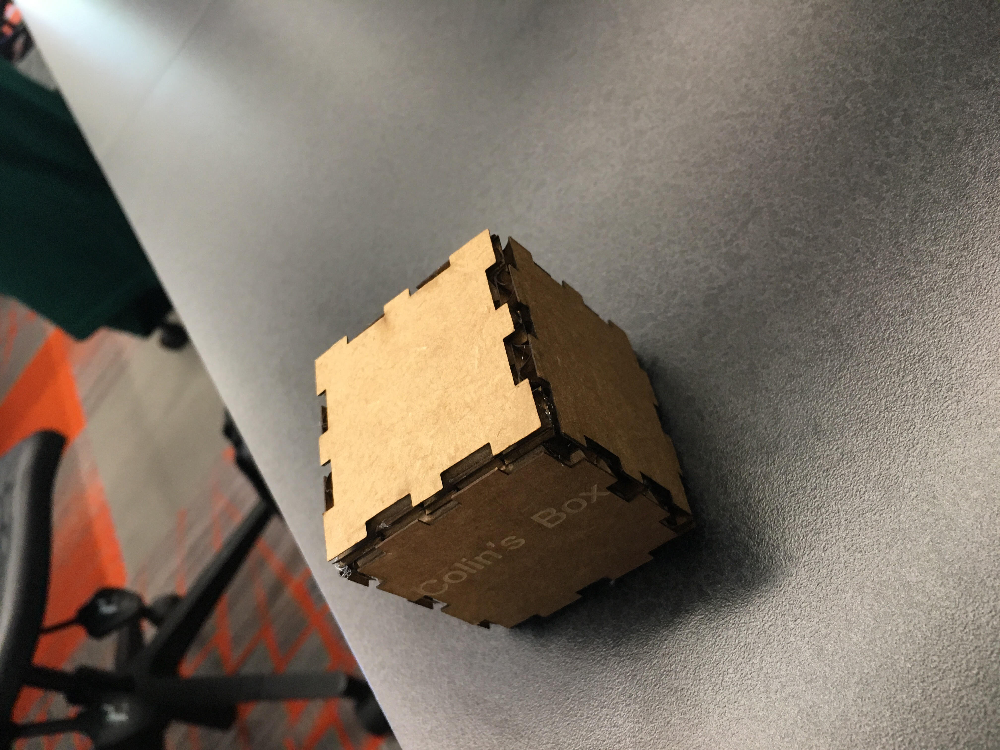
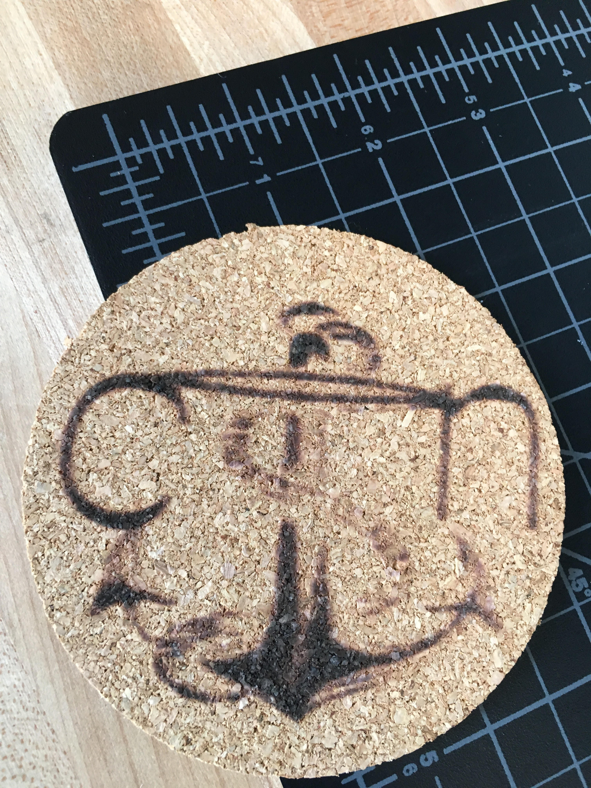
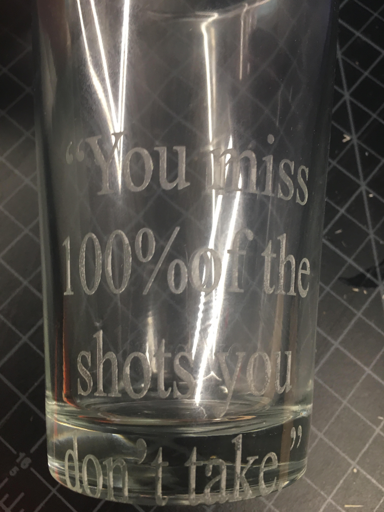
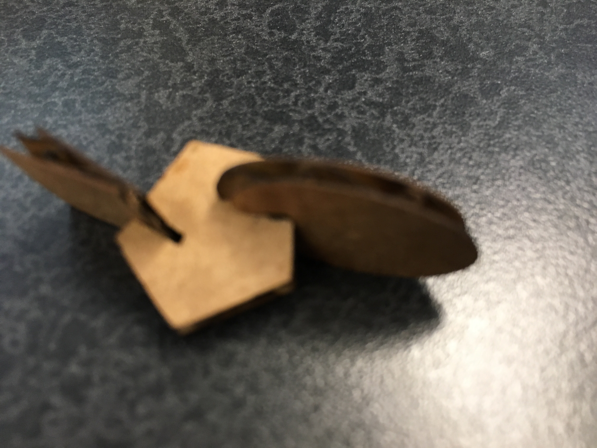
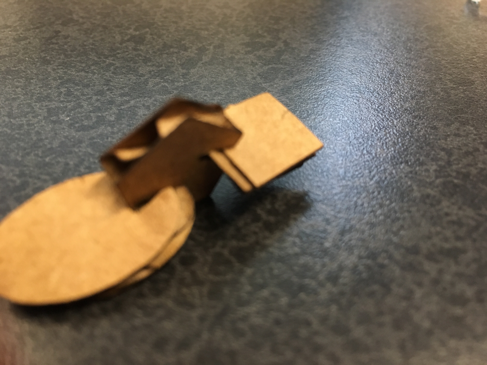

Rotation 4:
Main Focus: Rasberry Pi
:
Using a format from maker case, I downloaded a design and inserted it into CorelDraw. I made my CorelDraw sheet 4 by 4 and inserted the design, and made it hariline, as well as adding text, which I did not use hairline thickness with. Saving this design, I took it to the laser printer, and manipulated the settings. The print worked, and I glued the pieces together. Here it is!


Focus 2: Rastering a coaster, made from corkboard, with the Laser Printer. I created a design on corel draaw, and after manipulating the dimensions and size I printed.

Focus 3:Rastering a tall glass. I first made the design on CorelDraw, using LOBSTER, my favorite font. One thing that differed from mynormal engraving, was that the CorelDraw file had to be sideways so it could be printed on the glass which was held by the rotary on the laser printer. Looking back, I would have moved the file up on the sheet first, in order to avoid the text printing so low on the glass.

Focus 4:Making a Press and Fit Kit: I first made the design on CorelDraw, making multiple shapes, and cutting out rectangles on each which would function as the slots for the other shapes to fit in to. These slots had to be the same width as the thickness of the cardboard. I t worked well, but the shapes were a bit smaller than I would have preffered.



Home Page
About me
Rotation 1
Rotation 2
Rotation 3
Rotation 4
Rotation 5
Rotation 6
Rotation 7: Skateboard
Rotation 8
Rotation 9
Final Project
Original Files